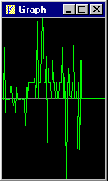

Graphical Display Window
This is a graphic version of the data hex dump window. It collects data from the target and displays it in graphic format. This is useful for tuning things on the target board where a graphical view would be helpful.
|  |
|
||||||||||||||||
Channel setup words:
You can display up to four channels. Each channel displays left to right, like an oscilloscope. These words (in the HOME wordlist) set up each channel. First, use g_chan to select the channel to modify.
| g_chan | ( n -- ) | Selects channel to operate on. 0..3. |
| g_addr | ( t-addr -- ) | Sets the start address of data to display. |
| g_data | ( -- h-addr ) | Points to data buffer. |
| g_length | ( n -- ) | Sets the number of data points to display. Allowable length is up to 1024 bytes. |
| g_center | ( pels -- ) | Sets position of centerline. 0 = top. |
| g_gain | ( scale -- ) | Sets point multiplier: scale = 1/0x10000000 to 0x7FFFFFFF/0x10000000. |
| g_pitch | ( n -- ) | Sets X pitch in pixels per sample. |
| g_color | ( n -- ) | Sets color of scope trace. |
| g_type | ( n -- ) | Sets type of data to display. |
| 0=byte, 1=word, 2=long, +4=alternating, +8=little-endian, +16=unsigned, +32=autoscale | ||
| g_clear | ( -- ) | Initializes channel to default settings. |
| pitch = 1, centerline = 100, color = light green, gain = auto, type = signed byte |
Color values range from 0 to 15 for traces on a black background:
| 0 = black | 4 = dark blue | 8 = dark gray | 12 = blue |
| 1 = dark red | 5 = dark magenta | 9 = red | 13 = magenta |
| 2 = dark green | 6 = dark cyan | 10 = green | 14 = cyan |
| 3 = brown | 7 = gray | 11 = yellow | 15 = white |
Type detail:
Size: byte = 8-bit, word = 16-bit, long = 32-bit
The Alternating bit causes every other point to be skipped. You can set up two traces to display interleaved data.
The Unsigned bit causes data to be treated as unsigned.
The Autoscale bit turns on autoscale mode.
Sample usage:
| 0 g_chan | Selects channel 0 |
| g_clear | Sets default values |
| 0x98000 g_addr | Start address in data RAM |
| 256 g_length | 256 samples |
| 1 g_type | Signed 16-bit big-endian data |
For displaying just one trace, autoscale is a nice feature. The window adjusts the gain and center values to fit the available window height. You can dump out the parameters and then manually set the gain using them as a starting point. In the above example, '0' prints:
Channel 0 [] configuration:
100 points of signed 8-bit
Start address = 0
Auto-scale Center=86 Gain=235469698
Pitch=1 Color=10